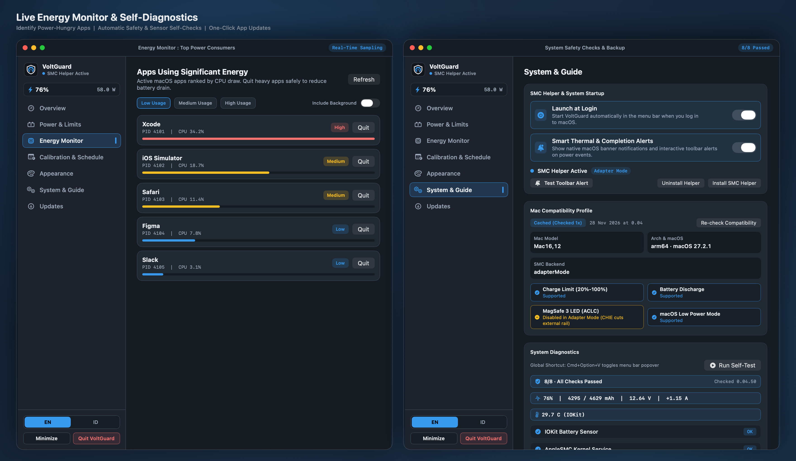

Interactive Thermal Card, Calibration Outcomes & Built-in Updates
Adds accurate temperature tracking on modern Macs, interactive thermal controls, Before vs After calibration records, Restore on Quit, and dedicated in-app updates.
Hold daily charging near 80%, pause during heat, and preserve capacity.

Switch views to inspect daily protection, guided calibration, and automatic app updates.
Keep desk-plugged MacBooks away from stressful 100% full states while automatically pausing charge when the battery gets warm.

Guided 5-stage calibration recalibrates battery percentage accuracy and compares Before vs After health capacity alongside four visual themes.

VoltGuard checks sensor compatibility once per device, monitors high-drain apps, and installs app updates cleanly in the background.
Track measurable differences in daily battery care alongside the latest version improvements.
Adds accurate temperature tracking on modern Macs, interactive thermal controls, Before vs After calibration records, Restore on Quit, and dedicated in-app updates.
Unsupported features are automatically hidden based on your hardware so every control works cleanly.
| Device | System Version | Included Features |
|---|---|---|
| MacBook Air & MacBook Pro (Apple Silicon) | macOS 13 and newer | Charge Limit, Cool Guard, Calibration, MagSafe Indicator |
| MacBook (Intel) | macOS 13 through 26 | Charge Limit, Controlled Discharge, Live Temperature |
| Desktop Mac (Mac mini, Studio, iMac) | macOS 13 and newer | Energy Monitor, System Diagnostics, Safe Battery Skip |
| iPhone & iPad Companion | iOS 16 and newer | Live Percentage & ETA, Heat Alerts, Custom Themes |
Download the macOS installer, drag VoltGuard to Applications, and set your daily limit in seconds. Future updates install cleanly right inside the app.